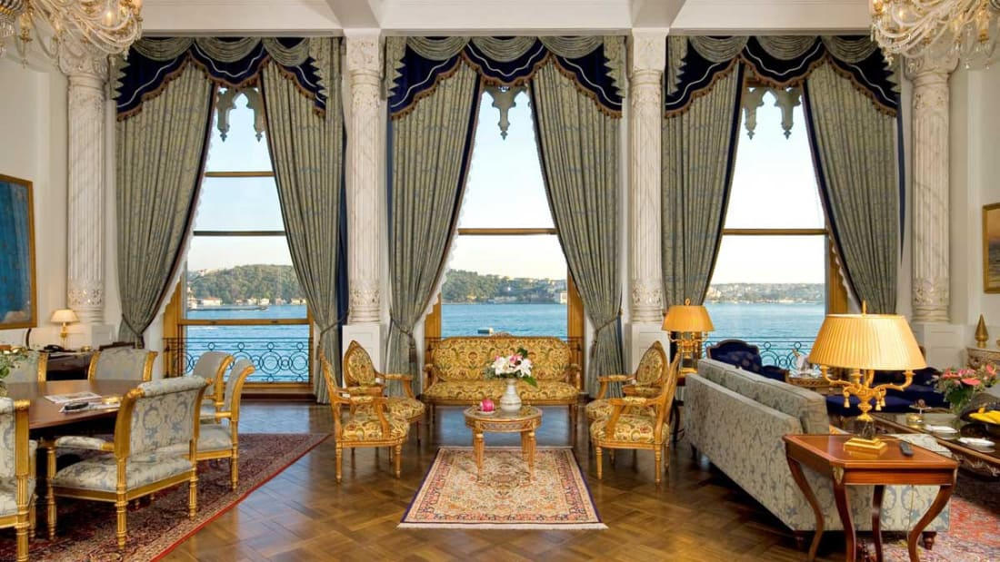
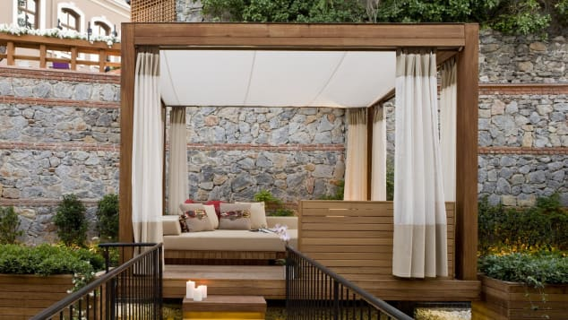
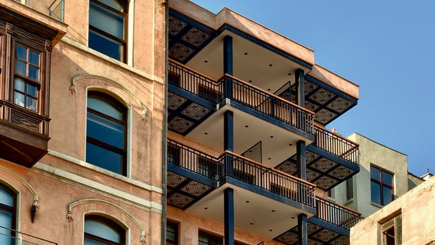
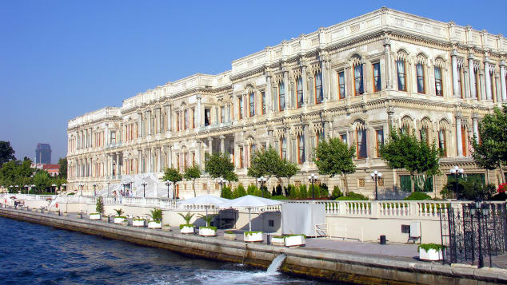
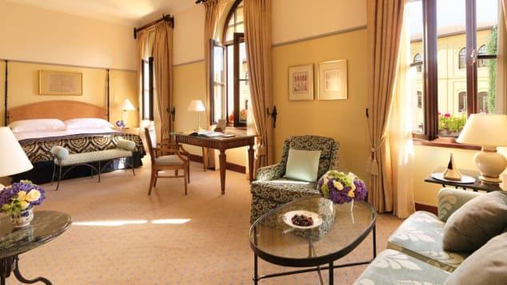

Istanbul
Istanbul is in north-western Turkey within the Marmara Region on a total area of 5,343 square kilometers (2,063 sq mi).
The Bosphorus, which connects the Sea of Marmara to the Black Sea, divides the city into a European,
Thracian side—comprising the historic and economic centers—and an Asian, Anatolian side. The city is further divided by the Golden Horn,
a natural harbor bounding the peninsula where the former Byzantium and Constantinople were founded.
The confluence of the Sea of Marmara, the Bosphorus,
and the Golden Horn at the heart of present-day Istanbul has deterred attacking forces for thousands of years
and remains a prominent feature of the city's landscape.
Following the model of Rome, the historic peninsula is said to be characterized by seven hills, each topped by imperial mosques. The easternmost of these hills is the site of Topkapı Palace on the Sarayburnu. Rising from the opposite side of the Golden Horn is another, conical hill, where the modern Beyoğlu district is. Because of the topography, buildings in Beyoğlu were once constructed with the help of terraced retaining walls, and roads were laid out in the form of steps.Üsküdar on the Asian side exhibits similarly hilly characteristics, with the terrain gradually extending down to the Bosphorus coast, but the landscape in Şemsipaşa and Ayazma is more abrupt, akin to a promontory. The highest point in Istanbul is Çamlıca Hill, with an altitude of 288 meters (945 ft). The northern half of Istanbul has a higher mean elevation compared to the south coast, with locations surpassing 200 meters (660 ft), and some coasts with steep cliffs resembling fjords, especially around the northern end of the Bosphorus, where it opens up to the Black Sea.
In the Köppen–Geiger classification system, Istanbul has a borderline Mediterranean climate (Csa), humid subtropical climate (Cfa) and oceanic climate (Cfb), due to its location in a transitional climatic zone. Since precipitation in summer months ranges from 20 to 65 mm (1 to 3 in), depending on location, the city cannot be classified as solely Mediterranean or humid subtropical.Due to its size, diverse topography, maritime location and most importantly having a coastline to two different bodies of water to the north and south, Istanbul exhibits microclimates. The northern half of the city, as well as the Bosporus coastline, express characteristics of oceanic and humid subtropical climates, because of humidity from the Black Sea and the relatively high concentration of vegetation. The climate in the populated areas of the city to the south, on the Sea of Marmara, is warmer, drier and less affected by humidity. The annual precipitation in the northern half can be twice as much (Bahçeköy, 1166.6 mm), than it is in the southern, Marmara coast (Florya 635.0 mm). There is a significant difference between annual mean temperatures on the north and south coasts as well, Bahçeköy 12.8 °C (55.0 °F), Kartal 15.03 °C (59.05 °F). Parts of the province that are away from both seas exhibit considerable continental influences, with much more pronounced night-day and summer-winter temperature differences. In winter some parts of the province average freezing or below at night.
5 of the best hotels in Istanbul
(WORLD TELESCOPE) — In Istanbul, you're never stuck for something to do, see, eat or drink--
no matter what time of the night or day it is.
But even the most energetic travelers need somewhere to take a breather.
In a destination packed with more hotels than you could visit in a lifetime, finding the best isn't easy.
But these five are among the best the city has to offer when you stay here:
1. Pera Palace Hotel

If you're an Agatha Christie fan looking for luxury and 19th-century grandeur,the Pera Palace Hotel is home.
Re-opened recently following a $25.5 million (€23 million) renovation,
the hotel was originally opened in 1892 to cater to passengers who arrived in Istanbul on the Orient Express.
With over one hundred rooms, a spa, Agatha Restaurant, tea lounge, patisserie and views over the Golden Horn,
the hotel is a two-minute walk from the city's main thoroughfare, Istikal Caddesi.
2. W Istanbul

In a hipster neighborhood,
the W Istanbul occupies one of the attractive Akaretler Row Houses,
which were built in a distinctly Western style in the 1870s.
Here you'll find 20-and-30-something hipsters
taking advantage of free Wi-Fi in the lobby lounge, Sip,
and downing cocktails before dinner at one of the many area restaurants.
A short taxi ride (depending on the unpredictable traffic) from Istanbul's major sites,
the W Istanbul is the focal point of a quiet and very European neighborhood.
3. Georges Hotel Galata

Georges Hotel, a 20-room boutique property
with high ceilings and exposed brick entry,
located on a cobbled alleyway is just plain chic.
Several of the rooms have balconies offering Bosphorus views
and guests can enjoy in-room yoga sessions and massage.
From the terrace of the hotel's French restaurant, Le Fumoir,
you get uninterrupted views of the historical sites of Sultanahmet.
The hotel is a short walk from the Galata Tower.
4. Ciragan Palace Hotel

A former Ottoman palace built by Sultan Abdulaziz,
the five-star Ciragan Palace Hotel has lost none of its regal opulence.
The Sultan's Suite is one of the most expensive in the world.
Guests staying in any of the 11 Palace Suites can arrive by private helicopter
to be greeted by their own butler.
On the shores of the Bosphorus,
located between the quiet neighborhoods of Besiktas and Ortakoy,
just a 10-minute taxi from Taksim Square, the property isn't just for the super rich.
There are a number of marginally cheaper but only moderately less luxurious rooms,
many with views over the Bosphorus.
5. Four Seasons Hotel Istanbul

Four Seasons operates two properties in Istanbul.
The Four Seasons Istanbul at Sultanahmet is ideal
if you want to be close to the city's major tourist sites
In the calm but centrally located neighborhood of Besiktas, however,
the Four Seasons Hotel Istanbul at the Bosphorus steals the show.
A converted Ottoman palace just meters from the shore of the Bosphorus,
the hotel has everything you'd expect from a luxury property,
from a fine dining Mediterranean restaurant to a spa and indoor and outdoor pools.
With 24-hour babysitting services,
a child-friendly attitude and everything a parent could require from strollers to cribs,
it's perfect for a relaxing family holiday.